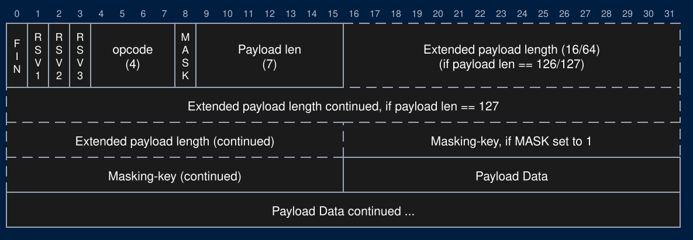
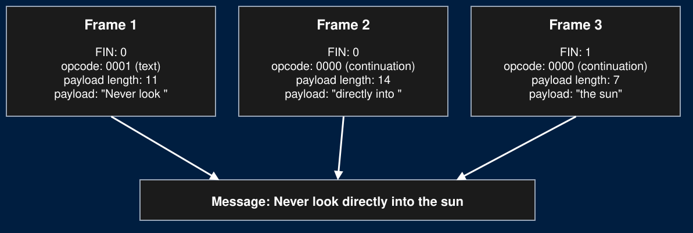
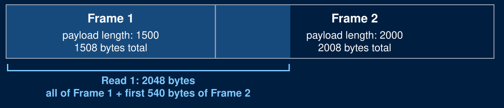
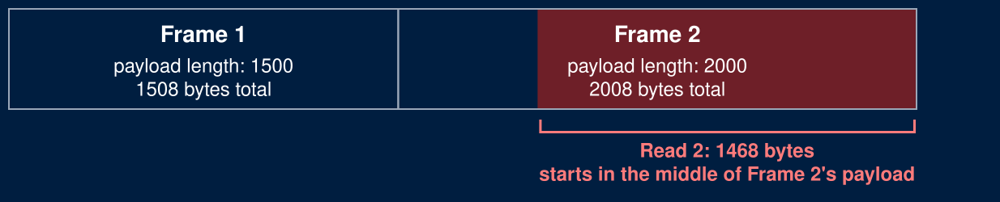
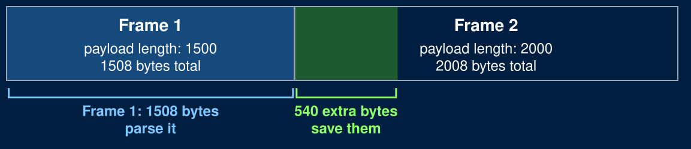
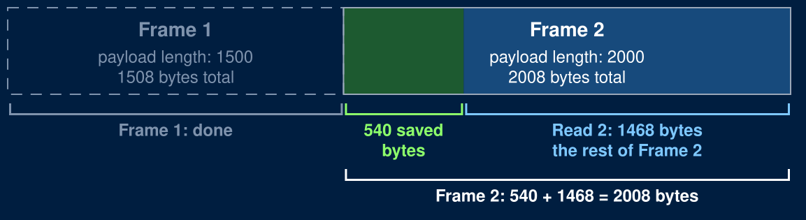
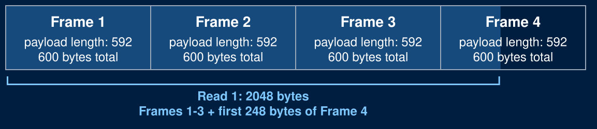
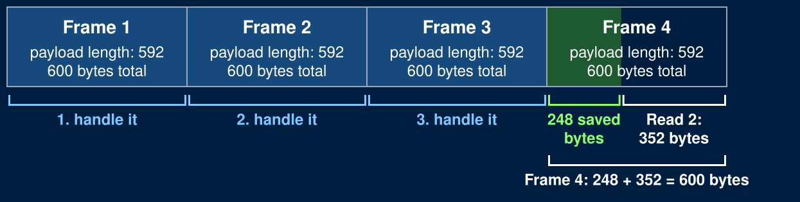

WebSocket Buffering
Buffering large WS frames, continuation frames, and back-to-back frames
WebSocket Buffers
Reads Don't Line Up With Frames
- TCP delivers a stream of bytes, not messages
- One
Readfrom the socket can return:- Part of a frame
- Exactly one frame
- The end of one frame and the start of the next
- Several frames
- The only way to delimit frames are by payload length
- Just like
Content-Lengthfor HTTP requests
- Just like
Special Cases
- We'll talk about 4 special cases that will come up when implementing WebSockets
- Buffering large frames
- Multiple frames per message using the fin bit and continuation frames
- Control frames in the middle of a multi-frame message
- Multiple frames being sent back-to-back
Buffering Large Frames
Buffering Large Frames
- You will sometimes receive WebSocket frames that are large enough that they need to be buffered
- Buffering frames is very similar to buffering HTTP requests
- When receiving a WebSocket Frame:
- Read bytes from the socket
- Parse the headers
- Read the payload length from the headers
- Keep reading bytes from the socket until you've read the entire frame
- Payload length does not include the header bytes
- Size of headers depends on the payload length (2 or 8 extra bytes) and mask (4 extra bytes)
- Process the frame
Continuation Frames
Continuation Frames
- You will sometimes receive very large messages from clients that will be sent in multiple frames
- Fin bit will be 0 until the last frame
- opcode will be 0000 for all but the first frame
- Payload length is only the length of that frame
- Sending a message >131,072 (2^17) bytes in Chrome will be sent in multiple frames
- Great for testing since this is predictable
- Firefox will send messages in a single frame
- Test thoroughly. If you only test in Firefox, you did not test this feature
Continuation Frames
- When you read a frame with a fin bit of 0:
- Keep reading frames until you read a frame with a fin bit of 1 and opcode of 0000
- Combine the payload of all frames, then process the entire message

Continuation Frames
- One message sent over 3 frames

Control Frames Mid-Message
- Control frames (close, ping, pong) can arrive between the frames of a fragmented message
- They are never fragmented themselves
- Example: a pong arrives in the middle of "Never look directly into the sun"
| Frame | FIN | Opcode | Payload |
|---|---|---|---|
| 1 | 0 | 0001 (text) | "Never look " |
| 2 | 1 | 1010 (pong) | |
| 3 | 0 | 0000 (continuation) | "directly into " |
| 4 | 1 | 0000 (continuation) | "the sun" |
- Handle the pong right away. Don't add it to the message
- On HW4 your server pings every 5 seconds. A large message will be interrupted eventually
- This will be checked during grading of objective 3
Back-to-back Frames
Back-to-back Frames
- Multiple WebSocket frames can be sent back-to-back on the same connection
- Nearly guaranteed when continuation frames are used
- If you read more bytes than you expect, you have read the headers of the next frame
- Use the payload length to delimit frames
- If you read < payload length bytes, you should buffer
- If you read > payload length bytes, store the extra bytes as the start of the next frame
Back-to-back Frames
- Two frames are sent by the client back-to-back
- The first frame has a payload length of 1500
- 1508 total bytes including headers
- The second frame has a payload length of 2000
- 2008 total bytes including headers
- The first frame has a payload length of 1500
- Both frames have been processed by TCP and are ready to be read
| Frame | FIN | Payload Length | Total Bytes |
|---|---|---|---|
| 1 | 1 | 1500 | 1508 |
| 2 | 1 | 2000 | 2008 |
Back-to-back Frames
- There are 3516 bytes ready to be read from the socket
- And you call
conn.Read(buffer)with a 2048 byte buffer- This will read up to 2048 bytes from the socket
- There are >2048 bytes ready, so you get the first 2048
- You read the entirety of the first frame, and the first 540 bytes of the second frame

Back-to-back Frames
- If you're not careful, your loop will go back to the socket and read the remaining 1468 bytes of the second frame and attempt to parse it
- Since you start in the middle of the frame, you will run header parsing code on masked payload bytes
- You will get errors!

Back-to-back Frames
- When parsing the first frame:
- Use the payload length to detect that you've read too many bytes
- Store the extra bytes in a separate data structure
- Parse the first frame

Back-to-back Frames
- When you finish processing the first frame, start parsing the second frame with the stored bytes
- Check the payload length and buffer if needed to read the rest of the frame
- Recommendation: Use your top-level WS loop to do this so you can handle any number of back-to-back frames
- Only read from the socket if you don't have any stored bytes, or you are buffering with a known payload length

Multiple Frames in One Read
- The client sends 4 small frames back-to-back
- Each has a payload length of 592: 600 bytes including headers
- 2400 bytes are ready to be read
conn.Read(buffer)with a 2048 byte buffer returns:- All of frames 1, 2, and 3 (1800 bytes)
- The first 248 bytes of frame 4

Multiple Frames in One Read
- Handle frames 1, 2, and 3 before you read again
- Frame 4 is incomplete: keep its 248 bytes and read more bytes from the socket
- Second read returns the last 352 bytes of frame 4

Don't Assume the Header Arrived
- With back-to-back frames, a read could end in the middle of the headers of a frame
- Even 1 byte into the next frame's header
- Before parsing a header, check that you have all of its bytes
- If you don't, read more
- Make sure you have at least 2 bytes before parsing
- Check the 7-bit payload length to see if you have all the header bytes
- Buffer as needed
- This will not be explicitly checked during HW4 grading, but you might experience strange bugs if you don't handle it
Limits
Don't Trust the Length
- The payload length is chosen by the client
- The 64-bit length lets an attacker claim a 16 EB frame
- Don't allocate
make([]byte, payloadLength)from an untrusted length - An attacker can also send continuation frames forever
- Limit the total size of a message, not only the size of a frame
- Too big? Send a close frame with status 1009 (Message Too Big) and close the connection
Testing
Back-to-back Frames
- To test for back-to-back frames:
- Edit the front end JavaScript to send a message multiple times when the user sends a message
- Make sure each message is duplicated the correct number of times
- With this modification, every echoed message should appear 5 times
Testing Without a Browser
- The browser decides how your messages are split. You can't control it
- Write a small Go test client
net.Dial("tcp", "localhost:8080"), send a handshake, read the 101- Then write hand-built frames with exact control over every byte
- Things to try:
- Two frames in one
Write(back-to-back) - One frame split across two
Writes with atime.Sleepbetween them (split header) - A pong between two continuation frames
- Two frames in one
- Frames from a client must be masked, but the mask can be
00 00 00 00- XOR with 0 doesn't change the payload, so you can read your test frames